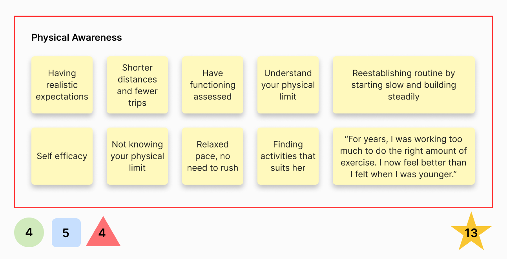
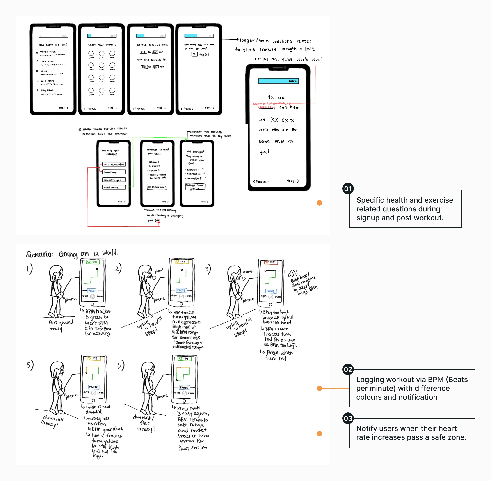
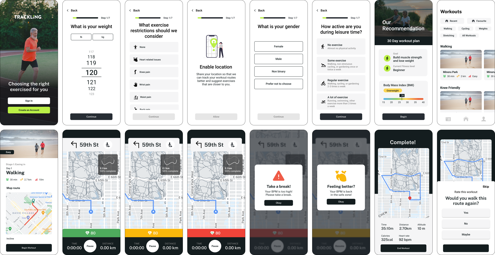
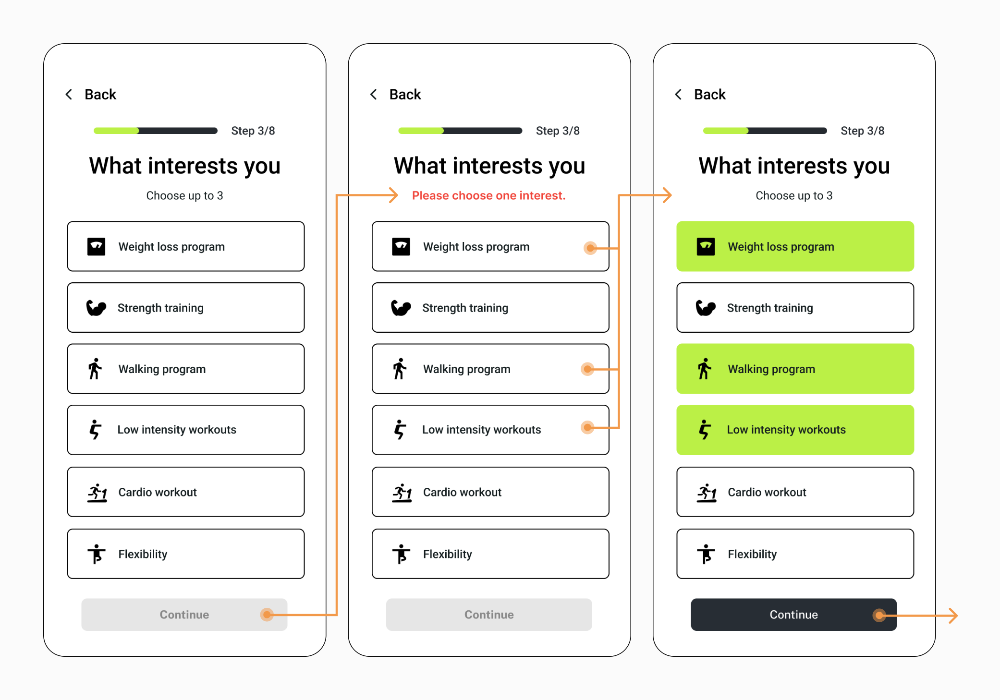

Overview
Introduction
During my interview process with Arcteryx, I was given a design challenge
Problem Identification
Many users complain about the fact that they would like to be able to compare jacket’s details to decide which one to buy. We currently have this feature, but we need to elevate it and make it more visible, since a lot of users are complaining about us not offering this feature at al
Problem
Users cannot effectively differentiate the techicality of different products nor navigate the comparison feature.
Final Design
Before
After
Research
Affinity Map
Goal: Determine a problem area
From our research and 8 interviews with seniors, we compiled all our data on Miro to observe the different topics within our domain.
Using Nielsen Norman's severity rating, our group narrowed down to focus on physical awarness because it had the highest score of frequency, impact, and persistance.
With a defined topic area, we created two 'How Might We' to guide us through further research.
Design Space
How might we help seniors stay within their physical limits and set realistic expectations?
How might we cater the appropriate exercises for seniors to feel confident?
Competitive Analysis
To understand how exisiting applications help users understand and stay within their physical limits, I analyzed 3 fitness applications: MyFitnessPal, Strava, and MapMyWalk.
Key Observations
Existing solutions focus more on progress tracking rather than helping users understand the level/intensity of exercise is within their limits.
Unlike younger athletes who focus on performance based goals, seniors are different in that they prioritize capability and safety
Design Considerations
Sketches
After observing existing applications and their features, each of our team members brainstormed new ideas that can help solve the user's problem.
First Iteration

User Testing
With our first prototype we conducted 4 users tests with seniors from ages 50-70.
We learned that seniors pay more attention to content and instructions rather than the visual cues
For our next iteration, we ensured that language and instructions were more clear, and maintained a simple-to-read interface.
Second Iteration
Iteration Change
You might wonder, why there is a big difference from the first and second iteration? I decided to revisit this project and challenge the previous design decisions.
Redefined Design Space
How might we simply the user experience and enhance the interface while considering the accessibility of senior users.
Usability Heuristics
Part of the redesign, I also accounted for micro interactions, such as helping users to recognize, diagnose, and recover from errors, which is especially important for seniors.
Accessible Design
To ensure that our design is suitable for seniors, I continued to make conscious design decisions and adjustments in colour, text, and language.
Iteration Details
Before
After
Removing input fields and using buttons as the response option.
Before
After
A purposeful home page that provides you a workout plan and catered exercises.
Before
After
Improved features to help assist seniors: virtual assistance, route completion, and BPM zones.
Before
After
Revamped workout summary with more personal details such as the heart rate analysis.
Before
After
Additional statistics gathered from previous workout and post workout survey to track and maintain progress.
Final Iteration
Solution Breakdown
Application
Trackling is a fitness support app that utilizes user’s health data to provide users with personalized workouts, notifications and visualized progress tracking.
Problem Brief
Many seniors (age 75 and above) lack physical awareness and push themselves too hard, causing unexpected injuries or falls
Accessibility Considerations
We want to create an accessible application suitable for seniors. The design considerations include high contrast colour combinations, larger standard font, and formal language understood by the user.
Final Mockup
Onboarding
Signup Process
Simplifying the onboarding process with button options to understand user’s fitness needs and goals.
Exercises

Activity Options
Objective based features that provide users with a cohesive fitness plan of daily suggested workouts.
Alternatively, users have the choice of choosing other activities in the workouts page.
Workout Recorder

Real-Time Health Report
On the walk, the user is provided with real-time notifications that is dependent of their 'zone'.
If they enter zone 4, the app will send a notification. In zone 5 , the notification will include audio and haptic alerts to notify the user to take a break until their BPM reaches a safe zone.
Utilizing primary colours not only helps features stands out from their surroundings but also are recognizable to seniors as they are incorporated in our daily life.
Personal Progress
Activity Tracking
After a workout, an overview of the stats and a simple survey are provided to the user. The workout is then noted as ‘Completed’ in the Home page.
In the Progress page, you can keep track of your completed workouts and other personal achievements.
Value
Impact
Helping seniors create a more personalized experience by helping them stay within their physical limits.
The app notifies users when they are exceeding their physical limits based on the safe thresholds of their active heart rate in beats per minute (BPM) and age group, for low, moderate, and high intensity activities. In addition, appropriate exercises are suggested based on their physical and health conditions.
Success Measures
- Increase of accessibility score on user interface and experience
- Task success rate on user's ability to complete a guided workout and survey
- User error rate to identify the number of times a user makes a mistake while navigating through the app
Next Steps
Areas I am interested in exploring further:
Digital Interaction
What is the feasibility of live progress tracking?
Physical Interaction
How accessible are bpm trackers and digital devices?
Reflection
⚠️ Usability Constraints
Working with seniors for the first time marked a profound learning journey. Through interviews, usability testing, and design work, I came to understand the significance of prioritizing functionality over aesthetics and paying close attention to accessible design features.
üåä Dynamic Design Process
Design involves a dynamic dance between diverging and converging around the problem at hand. You begin with a design space, uncovering needs and constraints, and from there, you might either narrow your focus, broaden your perspective, or completely pivot. Embracing this process and honing critical thinking skills is key to making it second nature.
üë©‚Äç‚úàÔ∏è Leading the team
I initially took the lead in steering the design process, but I also made sure to oversee the entire project while handling my own tasks. This experience taught me the immense value of harnessing our individual strengths and the incredible achievements a collaborative team can unlock.